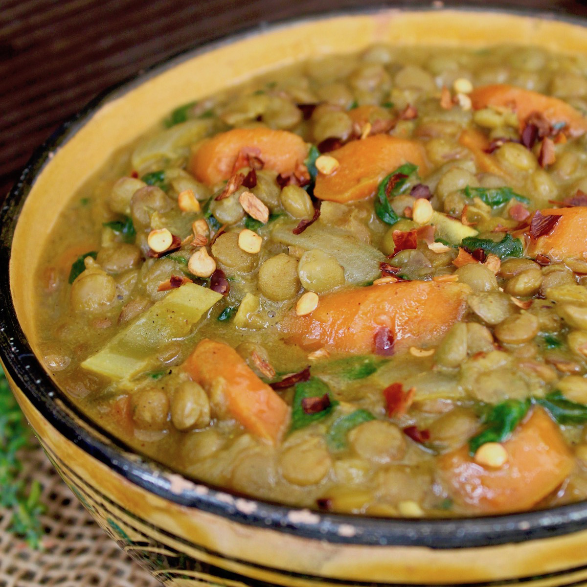

Home
Lentil Stew in Coconut Milk

How to Cook Lentil Stew in Coconut Milk
Vegan Lentil Stew with Coconut Milk is hearty, subtly sweet and has deep, rich flavors from warming curry spices.
It’s a delicious bowl of vegan comfort food.
Ingredients
- 2 tablespoons grapeseed oil
- 2 cups chopped yellow onion, medium dice
- 2 tablespoons minced fresh garlic
- 2 tablespoons fresh thyme leaves, washed and dried
- 1 tablespoon ground cumin
- 2 teaspoons ground turmeric
- 1 teaspoon ground coriander
- 1 teaspoon cardamom
- ¼ teaspoon ground cloves
- 2½ cups carrots, washed and dried, peeled, approximately ¼ to ½ inch slices
- 1 cup celery, washed and dried, peeled (optional), approximately ¼ inch slices
- 2 cups dried lentils
- 4½ cups vegetable stock
- 2¾ cups coconut milk
- 4 cups loosely packed spinach leaves, washed and dried, roughly chopped
- salt and pepper to taste
- chili flakes (if desired)
Steps
-
Sauté the onions and garlic with the thyme and spices. Coat a large pot (5 to 6 quart Dutch Oven is perfect), fitted with a lid, with the grapeseed oil.
Place it over medium heat and add the onion and garlic. Sauté for a couple minutes to soften and coat with the oil.
Then add the thyme, and all of the spices. Continue to sauté, stirring every so often, until the onions are very soft,
and not yet browning, about 10 minutes.
-
Add remaining vegetables except for the spinach. Add the carrots and celery, stir, and cook for about 5 minutes. Then add lentils and mix to blend.
-
Combine and add stock and coconut milk. In a large glass measuring cup (or bowl), whisk the coconut milk with 1 to 2 cups of the stock.
Whisk just long enough to smooth out any lumps in the coconut milk. Add this, along with the remaining stock, to the pot and mix to blend.
-
Cook. Bring to a boil, then reduce the heat to low, cover the pot and simmer until the lentils and carrots are tender, about 1 hour.
-
Add spinach and season. Add the spinach in a few batches, letting each one wilt into the stew before adding the next.
Season to taste with salt and pepper. (Here's How to Season to Taste.) Add chili flakes if desired for a bit of heat and serve.